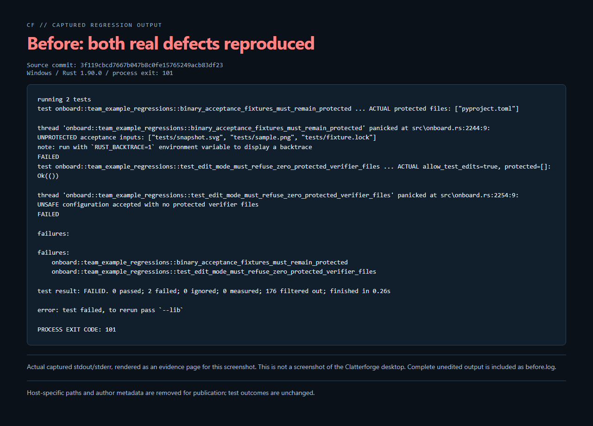
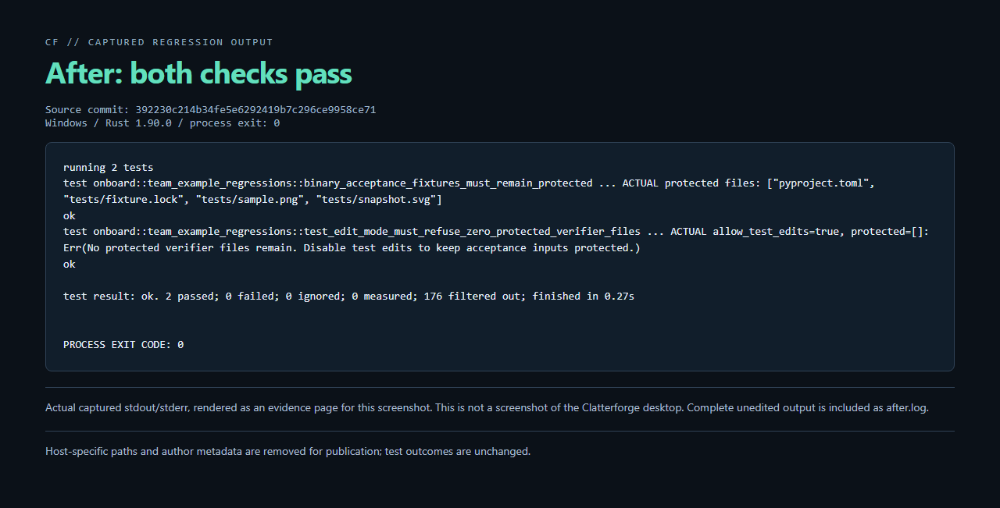
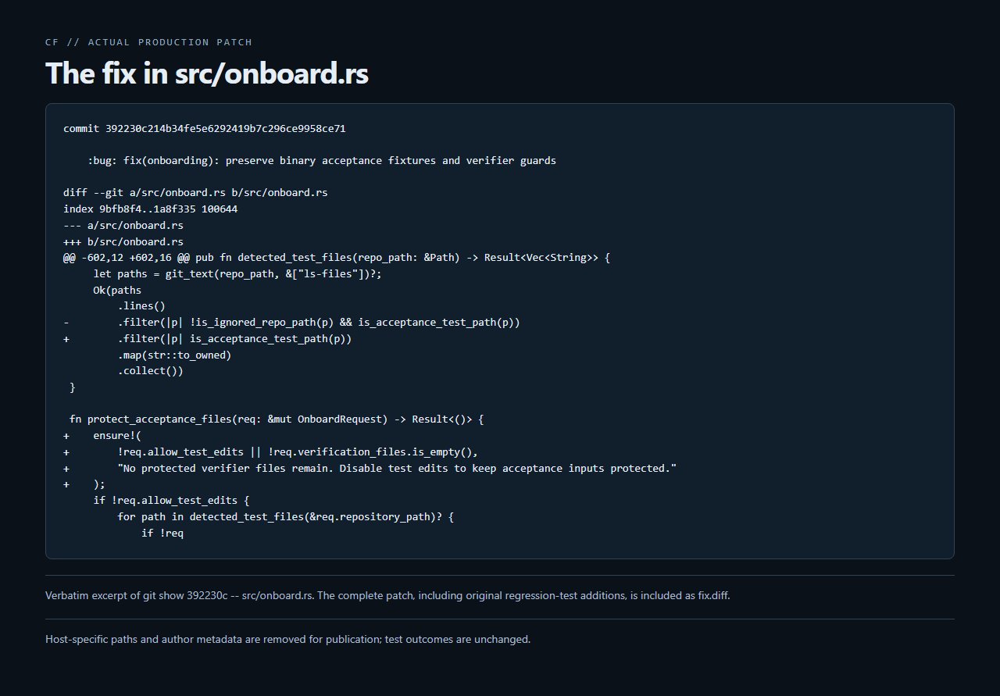

The short report
Four pages covering the defect, cause, production change and verified before-and-after result.
Download PDFWorked example 01 / Clatterforge itself
Two real onboarding defects. The original code, the shipped fix, and fresh test output you can inspect.
Historical-fix reproduction · Windows / Rust 1.90.0 · November 27, 2026
This replay tests Clatterforge's production code directly. It is not a new agent workflow run or a desktop walkthrough.
Inspection 01
The same added regression tests ran against the exact parent and fix snapshots. The original acceptance-protection tests also passed on the fixed snapshot.
Before the fix
0 passed / 2 failed
Test process exit code 101.
After the fix
2 passed / 0 failed
Test process exit code 0.
Onboarding reused a general repository-file exclusion filter when discovering acceptance inputs. It omitted tracked SVG, PNG and lock-file fixtures under tests/. The reproduction observed only pyproject.toml in the protected list.
Enabling edits to tests skipped automatic test protection. Without a separate check, onboarding accepted that option even with an empty protected-verifier list.
Tracked-test discovery now retains the fixtures. Test-edit mode requires protected verifier files to remain. The focused checks below call the actual onboarding functions using temporary repositories as controlled inputs.
Inspection 02
These screenshots show captured test output and the production patch in an evidence viewer. They are not screenshots of the desktop app. Open any image at full size to read it.

Fig. 1 / Before
Three tracked fixtures are unprotected; test-edit mode accepts an empty protected list. Both checks fail.

Fig. 2 / After
The same checks now observe all three fixtures and an explicit refusal of the empty-protection configuration.

Fig. 3 / Production patch
The two backend changes in src/onboard.rs. The complete file diff, including its original test additions, is in the evidence download.
This replay confirms the reported behavior and these two backend corrections. It does not measure worker quality, end-to-end workflow speed, desktop interaction or process isolation. Only the focused checks were rerun, rather than the full product suite.
The parent snapshot is 3f119cbcd7667b047b8c0fe15765249acb83df23; the fix is 392230c214b34fe5e6292419b7c296ce9958ce71. These identify the development-history snapshots used for this replay. Public source history has different commit IDs.
Inspection 03
Direct downloads. No account or email required. Host-specific paths and author metadata are removed; test outcomes are preserved.
Four pages covering the defect, cause, production change and verified before-and-after result.
Download PDFThe report, three screenshots, test logs, production diff, added regression module and SHA-256 checksums.
Download ZIPVerify download checksums or read the evidence notes. The pack is for inspection; it does not include a full historical source checkout.
Try it Ready to inspect your own project? Get the current Clatterforge installer and review the setup guide.